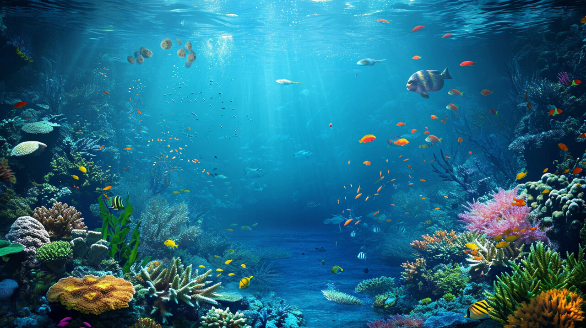

biologia marinha  Biologia marinha é o ramo biologico que estuda os organismos marinhos e seus ecossistemas.Esta disciplina investiga a vida em oceanos,mares e zonas costeiras, analisando desde micoorganismo ate grandes mamiferos marinhos